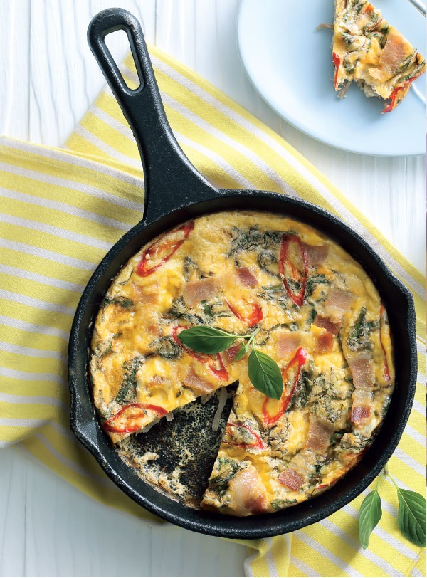

Home
วิธีทำไข่เจียวเบคอนสมุนไพร

วัตถุดิบ
- ไข่ไก่ 3 ฟอง
- เบคอนหั่นชิ้น 100 กรัม
- กระเทียมสับ 1 ช้อนโต๊ะ
- หัวไชโป๊หวานหั่นฝอย 1 ช้อนโต๊ะ
- พริกชี้ฟ้าสีแดงหั่นแฉลบ 1 เม็ด
- ใบโหระพาซอยละเอียด 2 ช้อนโต๊ะ
- น้ำมันพืชเล็กน้อย
- ใบโหระพา (สำหรับแต่ง)
- กระทะเหล็ก
วิธีทำ
- ตีไข่ไก่พอแตก ใส่เบคอน กระเทียม และหัวไชโป๊หวาน คนให้เข้ากัน
- ใส่พริกชี้ฟ้ากับใบโหระพา คนให้เข้ากันอีกครั้ง
- เทน้ำมันพืชใส่ในกระทะเหล็ก เทส่วนผสมไข่ลงไป นำเข้าอบที่อุณหภูมิ 180 องศาเซลเซียส ประมาณ 25 นาทีหรือจนสุกเหลือง นำออกมา ตกแต่งด้วยใบโหระพา จัดเสิร์ฟ
ตารางโภชนาการ
| สารอาหาร |
ปริมาณ |
หน่วย |
| โปรตีน |
300 |
g |
| ไขมัน |
100 |
g |